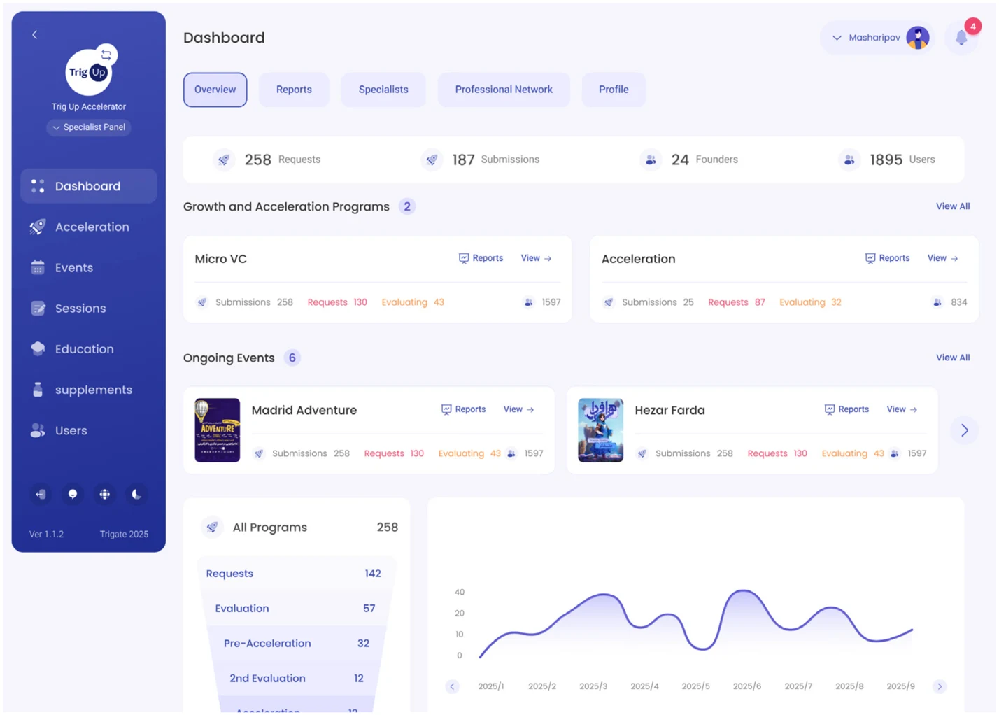

01 Flagship case study · 2021–2025
Trigate
From zero to an
innovation ecosystem.
Bringing programs, applications, learning, and coaching into one platform for startups and the organizations supporting them.
Founding Product Designer
B2B SaaS · Product strategy · Design systems
Explore TrigateFrom MVP to white-label SaaS

- 6,000+
- startup users
- 20+
- innovation organizations
- 31
- provinces across Iran
- One connected platform.
- Research to production.